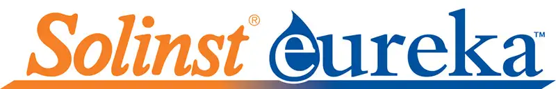
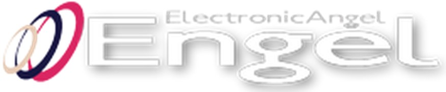

Telemetría • Monitoreo • Digitalización de datos

Medidores fijos/portátiles IP68 para medición de caudal, nivel y presión con telemetría.
Ver más
Sistemas de videoinspección, georadares, medidores de nivel y ecosondas para batimetría.
Ver más
Sondas multiparamétricas para la medición de la calidad del agua.
Ver másZernike Panamá ha desarrollado un software dedicado a la digitalización, visualización y gestión remota de datos provenientes de sensores de caudal, nivel, presión y calidad del agua.
La plataforma permite integrar equipos de telemetría, visualizar datos en tiempo real, generar reportes automáticos y facilitar la toma de decisiones en sistemas de monitoreo hidráulico y ambiental.
Ver manual y datasheet